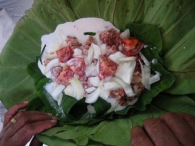
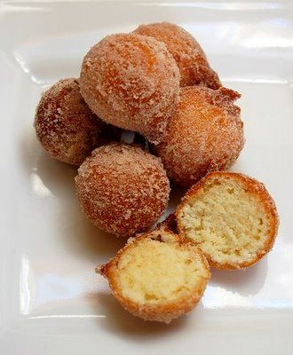
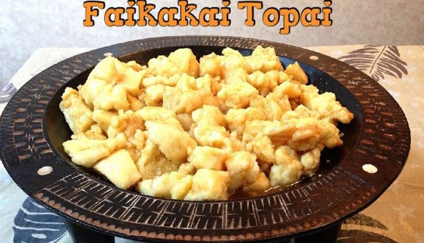
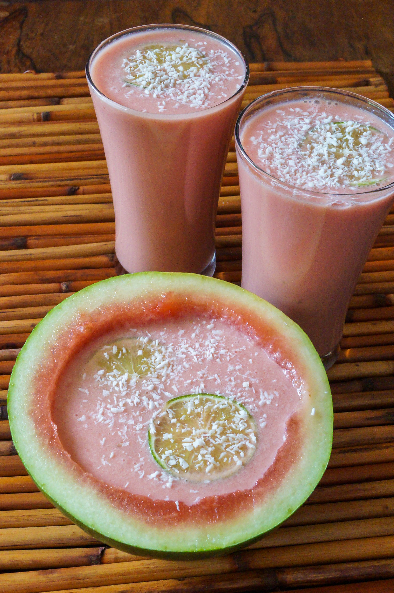

A Taste of Tonga
Try these simple recipes for a taste of Polynesian style cooking!
Lu Pulu

Ingredients
- Taro Leaves (*Spinach Leaves work as an alternative)
- Corned Beef
- Chopped Onions
- Coconut Milk
Other Supplies
- Aluminum Foil
- Knife
- Spoon
Directions
- Preheat oven to 350 degrees Farenheit.
- Cut a medium sized square of aluminum foil and lay flat.
- Lay taro leaves so that they create a surface large enough to add more ingredients on.
- Place a spoonful or two of corned beef on taro leaves.
- Sprinkle a spoonful of chopped onions on corned beef.
- Pour a spoonful or two of coconut milk on previous ingredients.
- Fold corners of aluminum foil up over ingredients and twist so that the contents are sealed without chance of leaking.
Keke 'Isite

Ingredients
- Flour
- Sugar
- Baking Powder
- Vegebtable Oil
- *Optional* Powdered Sugar and/or Cinnamon
Directions
Pour 3-4 cups of oil in saucepan and heat on medium-high until oil boils
Faikakai Topai

Ingredients
Directions
Watermelon Otai

Ingredients
Directions